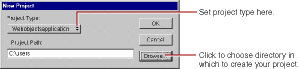

PATH
Documentation > WebObjects 4.5 >
Tools and Techniques
Creating WebObjects Application Projects
A WebObjects application project contains all the files needed to build and maintain your application. You use Project Builder to create a new project.
-
Launch Project Builder.
On Rhapsody, choose Project Builder from the Apple menu under Developer Applications. On Windows NT, you can launch Project Builder from the WebObjects program group in the Start menu.
-
Choose Project
New.

The New Project panel has a Project Type pop-up list that lets you choose the type of project you want to create.
-
In the Project Type pop-up list, make sure Webobjectsapplication is selected.
Another type of project you may want to create is Webobjectsframework. See Frameworks
for more information.
-
Click Browse to specify your project's location.
Type your project's location and name directly in the Project Path text field.
Note:
On Mac OS X Server, the file browser and the Project Type pop-up list both appear on the New Project panel.
-
Navigate to the directory in which to create your project.
-
Type the name of the project you want to create in the File name field.
-
Click Save.
The New Project panel now shows the path you specified.
-
Click OK.
The WebObjects Application Wizard launches.
© 1999 Apple Computer, Inc. – (Last Updated July 27 99)